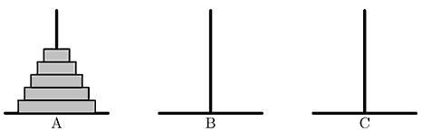

汉诺塔由三根柱子（分别用 $A$ $B$ $C$ 表示）和 $n$ 个大小互不相同的空心盘子组成。一开始 $n$ 个盘子都摞在柱子 $A$ 上，大的在下面，小的在上面，形成了一个塔状的锥形体。

对汉诺塔的一次合法的操作是指：从一根柱子的最上层拿一个盘子放到另一根柱子的最上层，同时要保证被移动的盘子一定放在比它更大的盘子上面（如果移动到空柱子上就不需要满足这个要求）。我们可以用两个字母来描述一次操作：第一个字母代表起始柱子，第二个字母代表目标柱子。例如，$AB$ 就是把柱子 $A$ 最上面的那个盘子移到柱子 $B$。汉诺塔的游戏目标是将所有的盘子从柱子 $A$ 移动到柱子 $B$ 或柱子 $C$上面。有一种非常简洁而经典的策略可以帮助我们完成这个游戏。首先，在任何操作执行之前，我们以任意的次序为六种操作（$AB$、$AC$、$BA$、$BC$、$CA$ 和 $CB$）赋予不同的优先级，然后，我们总是选择符合以下两个条件的操作来移动盘子，直到所有的盘子都从柱子 $A$ 移动到另一根柱子：
- 这种操作是所有合法操作中优先级最高的；
- 这种操作所要移动的盘子不是上一次操作所移动的那个盘子。
可以证明，上述策略一定能完成汉诺塔游戏。现在你的任务就是假设给定了每种操作的优先级，计算按照上述策略操作汉诺塔移动所需要的步骤数。
 Comet OJ
Comet OJ